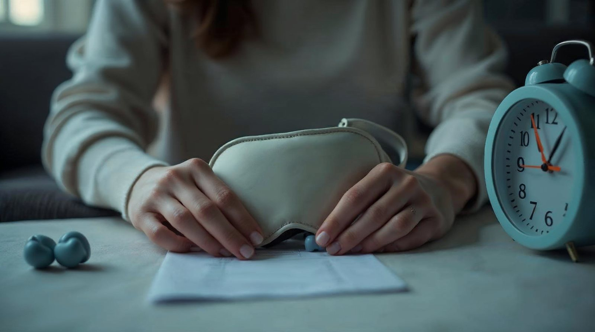
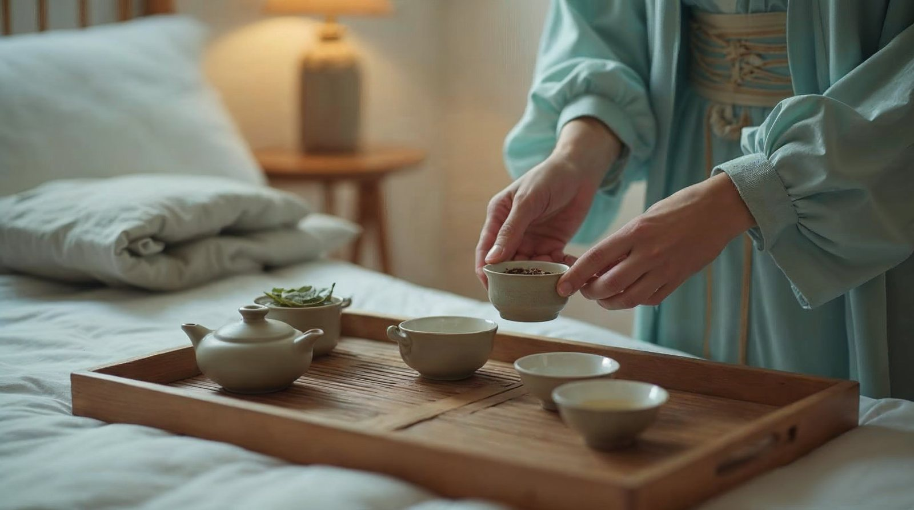
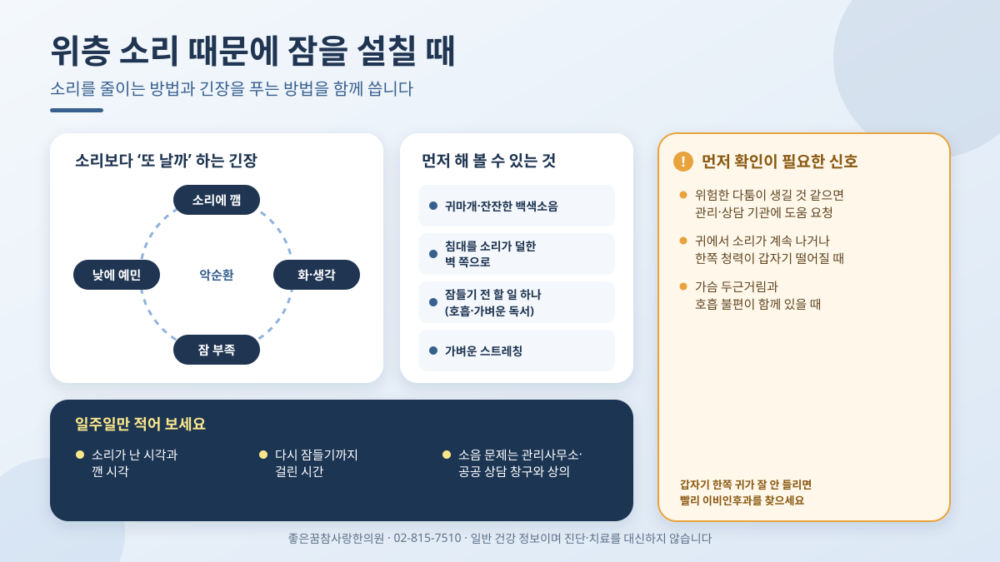

이종호 한의사 감수좋은꿈참사랑한의원 대표원장 (한의사 면허번호 19769)발행 2026-11-23 · 수정 2026-11-26
이 글의 차례
- 왜 이런 불편이 생길 수 있나요
- 왜 소리보다 기다리는 마음이 더 힘들까요
- 소리 때문인지, 다른 원인이 겹친 것인지 어떻게 구분하나요
- 먼저 이렇게 여쭙니다
- 일상에서 먼저 해 볼 수 있는 것
- 소리의 대비를 줄이는 방법은 무엇인가요
- 잠들기 전 긴장을 내려놓는 순서
- 상황별 예시
- 스스로 점검해 보세요
- 낮 동안에는 무엇을 해 볼 수 있나요
- 가족과 함께 지낼 때는 어떻게 하면 좋을까요
- 깬 뒤 화가 날 때는 어떻게 하나요
- 소리가 줄어든 뒤에도 귀가 쫑긋한 이유는 무엇인가요
- 소리 기록은 이렇게 남겨 두세요
- 한의원에서 함께 살필 수 있는 경우
- 상담 전에 알아 두시면 좋은 것
- 얼마나 지켜보고 언제 상담할까요
- 이렇게 기록해 오시면 상담이 쉬워집니다
- 이런 증상은 먼저 확인이 필요합니다
- 관련 글
소리가 나는 시간에만 깨는 것이 아니라, 소리가 날까 봐 누워서도 귀를 세우게 되는 분이 많습니다. 아파트와 다세대 주택이 많은 동네에서는 흔한 고민이기도 합니다. 소리를 줄이는 방법과 몸의 긴장을 푸는 방법을 함께 써야 잠이 돌아오기 쉽습니다.
왜 이런 불편이 생길 수 있나요
- 조용한 밤에는 작은 소리도 크게 들려 얕은 잠에서 쉽게 깹니다.
- 예측할 수 없는 소리가 반복되면 몸이 늘 경계하는 상태가 되어 잠들기 전부터 긴장합니다.
- 깬 뒤 화가 나거나 생각이 많아지면 다시 잠들기까지 오래 걸립니다.
- 잠이 부족해지면 낮에 예민해져 소리가 더 크게 느껴지는 악순환이 생길 수 있습니다.
왜 소리보다 기다리는 마음이 더 힘들까요
층간소음으로 오시는 분들께 여쭤 보면, 소리가 났을 때보다 언제 또 날지 몰라 기다리는 시간이 더 괴롭다고 말씀하시는 경우가 많습니다. 예측할 수 없는 자극이 반복되면 몸은 늘 대비하는 쪽으로 기울어, 조용한 순간에도 귀와 어깨에 힘이 들어가 있습니다.
이렇게 경계가 이어지면 잠들기 직전의 느슨한 상태로 넘어가기가 어렵습니다. 막 잠이 들려는 순간 작은 소리 하나에 다시 깨어나고, 그 뒤로는 다음 소리를 기다리느라 더 말똥말똥해집니다. 소리 자체는 몇 초였는데 깨어 있는 시간은 한 시간이 되는 이유가 여기에 있습니다.
화가 나는 감정도 잠을 밀어냅니다. 소리를 들을 때마다 억울함과 짜증이 올라오면 심장이 빨리 뛰고 몸이 데워져, 잠들기 좋은 상태와는 반대 방향으로 갑니다. 그래서 소리를 줄이는 방법과 함께 내 몸을 가라앉히는 방법을 같이 쓰는 것이 중요합니다.
소리 때문인지, 다른 원인이 겹친 것인지 어떻게 구분하나요
- 소리가 없는 날, 예를 들어 위층이 여행을 간 날에도 잠들기 어렵다면 소리보다 몸에 남은 긴장이 중심일 수 있습니다.
- 다른 곳에서 잘 때, 예를 들어 가족 집이나 숙소에서는 잘 잔다면 지금 집의 소리와 그에 대한 경계가 큰 몫을 하고 있을 가능성이 큽니다.
- 위층 소리뿐 아니라 냉장고 소리나 시계 소리까지 거슬리기 시작했다면 소리에 대한 예민함 자체가 커진 상태일 수 있습니다.
- 소리와 상관없이 새벽 같은 시각에 깬다면 잠의 리듬이나 다른 이유를 함께 살펴봅니다.
- 이 일 말고도 요즘 마음 쓰이는 일이 많다면 소리는 마지막 한 방울일 수 있어 생활 전체를 함께 봅니다.
먼저 이렇게 여쭙니다
- 소리가 나는 시간이 일정한가요, 불규칙한가요?
- 소리가 나지 않는 날에도 잠들기 전에 귀를 기울이게 되나요?
- 소리 때문에 깬 뒤 다시 잠들기까지 얼마나 걸리나요?
- 잠자는 방을 옮겨 본 적이 있나요?
- 이 일로 낮에 짜증이나 예민함이 늘었나요?
일상에서 먼저 해 볼 수 있는 것
- 귀마개나 잔잔한 백색소음으로 소리의 대비를 줄여 보기
- 침대를 소리가 덜 전해지는 벽 쪽으로 옮겨 보기
- 소리가 나는 시각을 짧게 적어 두고, 상의가 필요하면 관리사무소나 공식 상담 창구를 통하기
- 잠들기 전 소리 걱정 대신 할 일 하나(호흡, 가벼운 독서)를 정해 두기
- 자기 전 가벼운 스트레칭으로 몸의 긴장 풀기
- 한밤중에 깼을 때는 소리를 오래 확인하기보다 시각만 적고 숨을 길게 내쉬며 다시 눕기
- 소리가 잦은 시간대를 알고 있다면 잠드는 시각을 30분쯤 앞당기거나 늦춰 그 시간을 비켜 보기
소리의 대비를 줄이는 방법은 무엇인가요
조용한 방에서 갑자기 나는 쿵 소리는 크게 들리지만, 바탕에 잔잔한 소리가 깔려 있으면 같은 소리도 덜 튀게 들립니다. 이것을 소리의 대비를 줄인다고 표현합니다.
- 선풍기나 공기청정기의 일정한 바람 소리, 빗소리 같은 잔잔한 소리를 작게 틀어 둡니다. 볼륨은 대화 소리보다 작게 맞추고, 소리가 잦은 시간대에만 켜 두어도 됩니다.
- 귀마개는 귀에 맞는 크기를 고르고, 처음에는 잠들 무렵 한두 시간만 써 보며 귀가 불편하지 않은지 확인합니다.
- 두꺼운 커튼과 러그, 책장처럼 소리를 흡수하는 물건을 소리가 나는 쪽 벽이나 천장 아래에 두면 울림이 조금 줄어드는 경우가 있습니다.
- 침대 머리를 소리가 잦은 방향과 반대쪽으로 돌려 봅니다. 몇십 센티미터만 옮겨도 느낌이 달라졌다는 분이 있습니다.
- 방이 여럿이라면 소리가 잦은 시기에는 잠시 다른 방에서 자 보는 것도 방법입니다. 이때도 눕는 시각과 일어나는 시각은 평소대로 지킵니다.
잠들기 전 긴장을 내려놓는 순서
소리를 기다리는 몸은 어깨가 올라가 있고 이를 악물고 있는 경우가 많습니다. 잠자리에 들기 전 10~15분, 아래 순서로 몸의 힘을 빼 보세요.
- 1. 누운 채로 두 손을 배 위에 올리고 숨을 내쉴 때 배가 내려가는 것을 느낍니다.
- 2. 발끝에 힘을 꽉 주었다가 툭 풀고, 종아리와 허벅지, 엉덩이 순서로 올라오며 같은 방법을 반복합니다.
- 3. 어깨를 귀 쪽으로 끌어올렸다가 내리고, 어금니를 살짝 떼어 턱의 힘을 풉니다.
- 4. 마지막으로 이마와 눈 주변의 힘을 빼고, 소리가 나더라도 확인하지 않겠다고 스스로에게 말해 둡니다.

상황별 예시
- 예를 들어 이른 아침 출근하는 직장인이 밤 11시 무렵 발걸음 소리에 잠들기 직전 자꾸 깨는 경우, 그 시간대에 잔잔한 백색소음을 켜 두고 잠드는 시각을 조금 옮겨 소리가 잦은 시간을 비켜 봅니다. 소리가 반복되는 시각은 짧게 적어 두었다가 관리사무소에 상의할 때 참고합니다.
- 예를 들어 시험을 앞둔 수험생이 공부하는 동안 소리에 신경이 곤두서 밤에도 소리를 기다리게 되는 경우, 공부할 때는 귀마개나 백색소음을 쓰고, 잠자리에 들기 전 10분은 호흡과 가벼운 스트레칭으로 몸의 긴장을 풀어 '소리를 기다리는 시간'을 줄여 봅니다.
- 예를 들어 아이를 재운 뒤에야 쉴 수 있는 부모가 아이가 깰까 봐 함께 긴장하는 경우, 아이 방과 어른 방 모두 잠자리 위치를 소리가 덜 전해지는 쪽으로 옮기고, 혼자 애쓰기보다 관리사무소나 공식 상담 창구를 통해 상의하는 편이 마음의 부담을 덜 수 있습니다.
스스로 점검해 보세요
- 소리가 나지 않는 밤에도 누우면 귀를 기울이게 된다.
- 소리에 깬 뒤 다시 잠들기까지 30분 넘게 걸리는 날이 일주일에 세 번 이상이다.
- 소리를 떠올리기만 해도 가슴이 두근거리거나 몸에 힘이 들어간다.
- 낮에도 작은 소리에 짜증이 나고 예민해졌다.
- 어깨와 목이 굳고 머리가 무거운 날이 늘었다.
- 잠이 부족해 낮에 꾸벅꾸벅 조는 일이 잦다.
- 소리 생각 때문에 집에 들어가기가 망설여진다.
낮 동안에는 무엇을 해 볼 수 있나요
밤의 예민함은 낮의 생활과 이어져 있습니다. 잠이 부족한 날 낮에 카페인을 늘리면 저녁까지 신경이 곤두서 소리가 더 크게 들리는 악순환이 생기기 쉽습니다. 커피는 이른 오후까지로 정해 두세요.
하루 한 번은 집 밖에서 시간을 보내 보세요. 집이 쉬는 곳이 아니라 긴장하는 곳이 되어 버렸다면, 공원 산책이나 도서관처럼 소리 걱정 없이 머물 수 있는 곳에서 몸을 풀어 주는 시간이 필요합니다.
부족한 잠을 낮잠으로 채우고 싶다면 이른 오후에 20분 안쪽으로 짧게 자 보세요. 저녁 무렵 길게 자면 밤에 잠드는 시각이 밀려 소리가 잦은 시간대와 더 겹칠 수 있습니다.
가족과 함께 지낼 때는 어떻게 하면 좋을까요
같은 집에 살아도 소리에 대한 예민함은 사람마다 다릅니다. 한 사람은 거의 못 느끼는데 다른 사람은 매번 깬다면, 예민한 쪽이 유난스럽다고 여기기보다 잠자리를 바꿔 주는 식으로 함께 방법을 찾아보세요.
소리가 날 때마다 가족끼리 이야기를 키우면 집 안 분위기가 함께 긴장합니다. 기록은 한 사람이 맡고, 상의 창구에 연락하는 일도 정해 두면 각자 소리에 매달리는 시간이 줄어듭니다.
아이가 있다면 아이 앞에서 이웃을 향한 화를 크게 드러내지 않도록 마음을 써 주세요. 아이도 소리에 함께 예민해지기 쉽습니다.
깬 뒤 화가 날 때는 어떻게 하나요
소리에 깨면 화가 나는 것은 당연한 반응입니다. 다만 그 화를 붙잡고 누워 있으면 잠은 점점 멀어집니다. 이럴 때는 화난 마음을 없애려 하기보다 몸을 먼저 가라앉히는 쪽으로 방향을 돌려 보세요.
숨을 들이쉴 때보다 내쉴 때를 두 배쯤 길게 하면 두근거림이 조금씩 잦아드는 경우가 많습니다. 어지러우면 바로 멈추고 편하게 숨 쉬세요. 숨을 세는 동안에는 소리를 떠올릴 틈도 조금 줄어듭니다. 소리의 시각은 머리맡 메모지에 한 줄만 적고, 따지는 일은 내일 낮으로 미뤄 둡니다.
천장을 두드리거나 한밤중에 직접 찾아가는 것은 서로의 감정을 키우기 쉽습니다. 상의는 낮에 관리사무소나 공식 상담 창구를 거치는 편이 마음의 부담도 덜고 차분하게 풀어 가는 데 도움이 됩니다.
소리가 줄어든 뒤에도 귀가 쫑긋한 이유는 무엇인가요
이웃과 이야기가 잘 되어 소리가 줄었는데도 한동안 누우면 귀를 기울이게 된다는 분이 있습니다. 몇 달 동안 경계하던 몸은 상황이 바뀌어도 그 습관을 금방 내려놓지 못하기 때문입니다.
이럴 때는 조용한 밤을 하나씩 쌓아 가는 시간이 필요합니다. 오늘은 소리가 나지 않았다는 것을 아침에 한 줄 적어 두면, 몸이 이제 괜찮다는 것을 조금씩 받아들이는 데 도움이 됩니다. 잔잔한 배경 소리도 바로 끊지 말고 볼륨을 조금씩 줄여 가며 정리해 보세요.
이 시기에 잠들기 전 긴장 풀기 순서를 계속 이어 가면, 소리가 아니라 몸이 쉬는 신호를 기준으로 잠드는 습관이 다시 자리 잡기 쉽습니다.
소리 기록은 이렇게 남겨 두세요
소리 기록은 상의할 때도, 내 잠을 돌아볼 때도 쓸모가 있습니다. 예를 들어 '23시 10분, 쿵쿵 걷는 소리, 10분쯤, 잠들기 직전이라 깸, 다시 잠들기까지 40분'처럼 짧게 적습니다.
일주일쯤 모이면 소리가 잦은 시간대가 보이고, 그 시간을 비켜 잠드는 시각을 30분쯤 조정해 볼 수 있습니다. 소리가 없었던 날의 잠도 함께 적어 두면, 소리가 없어도 잠들기 어려운지 스스로 가늠해 보기 쉽습니다.

한의원에서 함께 살필 수 있는 경우
- 작은 소리에도 깜짝 놀라 깨는 경우 긴장의 정도와 수면 시각을 함께 살핍니다.
- 낮에도 예민함이 이어져 하루가 지치는 경우 식사와 몸의 온기를 함께 살핍니다.
- 어깨와 목이 굳고 두통이 함께 오는 경우 생활 전체의 피로를 함께 살핍니다.
좋은꿈참사랑한의원에서는 첫 방문 때 맥부터 짚고, 맥을 짚으면서 소리가 나는 상황과 잠의 변화, 낮의 예민함을 여쭙습니다. 필요하다고 판단될 때 혀와 배를 살펴 몸이 얼마나 긴장해 있는지 확인하고, 어깨와 목이 굳고 두통이 함께 있다면 목과 어깨의 움직임도 함께 봅니다.
그 뒤 잠자리 위치와 소리의 대비를 줄이는 방법, 잠들기 전 습관처럼 생활에서 해 볼 것을 정하고, 필요하면 침이나 한약 상담을 이어 갑니다. 적어 오신 잠 기록은 다음 진료 때 함께 봅니다.
상담 전에 알아 두시면 좋은 것
한약 상담을 하게 되면 지금 드시는 약과 영양제를 먼저 여쭙고 확인한 뒤에 정합니다. 처방받은 약은 임의로 끊거나 줄이지 마시고, 임신 중이거나 임신 가능성이 있다면 먼저 말씀해 주세요. 이 경우 산부인과와도 함께 상의하시길 권합니다.
이웃과의 일은 진료실에서 대신 풀어 드릴 수 없지만, 그 일로 지친 몸과 잠은 함께 돌볼 수 있습니다. 하소연처럼 느껴지더라도 편하게 말씀해 주세요. 무엇이 가장 힘든지 아는 것이 진료의 출발점이 됩니다. 소리 기록과 잠 기록을 함께 가져오시면 이야기를 나누기가 한결 수월합니다.
얼마나 지켜보고 언제 상담할까요
- 귀마개나 백색소음, 잠자리 위치 바꾸기를 1~2주 해 보며 깬 횟수와 다시 잠들기까지 걸린 시간을 적어 봅니다.
- 소리가 줄어든 뒤에도 2~4주 넘게 귀를 세우며 잠들기 어렵다면 긴장이 몸에 남아 있는 것일 수 있어 상담을 받아 보세요.
- 잠이 부족해 낮에 업무나 운전이 어렵거나 두통이 잦아졌다면 기간과 관계없이 상담하세요.
이렇게 기록해 오시면 상담이 쉬워집니다
- 일주일 정도의 소리가 난 시각과 깬 시각
- 다시 잠들기까지 걸린 시간
- 낮의 예민함, 두통, 어깨 굳음 여부
- 복용 중인 수면제나 다른 약
이런 증상은 먼저 확인이 필요합니다
- 한쪽 귀가 갑자기 잘 안 들리거나 귀울림이 새로 생긴 경우
- 스스로를 해칠 생각이 들면 ☎ 109로 바로 연락하세요.
이런 신호가 있으면 한의원보다 가까운 병원이나 응급실을 먼저 찾으세요.
관련 글

여쭙는 것
- 소리가 나는 시간이 일정한가요, 불규칙한가요?
- 소리가 나지 않는 날에도 잠들기 전에 귀를 기울이게 되나요?
- 소리 때문에 깬 뒤 다시 잠들기까지 얼마나 걸리나요?
생활에서 해 볼 것
- 귀마개나 잔잔한 백색소음으로 소리의 대비를 줄여 보기
- 침대를 소리가 덜 전해지는 벽 쪽으로 옮겨 보기
- 소리가 나는 시각을 짧게 적어 두고, 상의가 필요하면 관리사무소나 공식 상담 창구를…
한의원에서 함께 살필 것
- 작은 소리에도 깜짝 놀라 깨는 경우 긴장의 정도와 수면 시각을 함께 살핍니다.
- 낮에도 예민함이 이어져 하루가 지치는 경우 식사와 몸의 온기를 함께 살핍니다.
- 어깨와 목이 굳고 두통이 함께 오는 경우 생활 전체의 피로를 함께 살핍니다.
먼저 확인이 필요한 신호
- 한쪽 귀가 갑자기 잘 안 들리거나 귀울림이 새로 생긴 경우
- 스스로를 해칠 생각이 들면 109로 바로 연락하세요.
한눈에 보는 표
| 구분 | 핵심 |
|---|---|
| 여쭙는 것 | 소리가 나는 시간이 일정한가요, 불규칙한가요? 소리가 나지 않는 날에도 잠들기 전에 귀를 기울이게 되나요? |
| 생활에서 해 볼 것 | 귀마개나 잔잔한 백색소음으로 소리의 대비를 줄여 보기 침대를 소리가 덜 전해지는 벽 쪽으로 옮겨 보기 |
| 한의원에서 함께 살필 것 | 작은 소리에도 깜짝 놀라 깨는 경우 긴장의 정도와 수면 시각을 함께 살핍니다. 낮에도 예민함이 이어져 하루가 지치는 경우 식사와 몸의 온기를 함께 살핍니다. |
| 먼저 확인이 필요한 신호 | 한쪽 귀가 갑자기 잘 안 들리거나 귀울림이 새로 생긴 경우 스스로를 해칠 생각이 들면 109로 바로 연락하세요. |
자주 묻는 질문
귀마개를 쓰면 잠에 해가 되나요?
귀에 맞는 제품을 청결하게 쓰면 부담이 적지만 불편하거나 귀가 아프면 쓰지 않는 편이 좋습니다.
백색소음은 밤새 틀어도 되나요?
볼륨을 작게 두면 부담이 적은 편이지만, 오히려 신경 쓰인다면 타이머로 잠들 무렵까지만 쓰는 방법도 있습니다.
소리에 익숙해질 수 있나요?
사람마다 다르며 긴장이 풀려야 익숙해지는 경우가 많습니다. 익숙해지지 않고 힘들다면 상담해 보시길 권합니다.
소음 때문에 다른 방에서 자도 될까요?
소리가 덜 들리는 방이 있다면 잠시 옮겨 자는 것도 방법입니다. 다만 자는 시각과 일어나는 시각은 평소대로 지키는 편이 리듬을 지키는 데 좋습니다.
소음 문제는 어디에 상의하면 좋을까요?
먼저 관리사무소에 소리가 나는 시각과 정도를 알리고 상의해 보세요. 층간소음 이웃사이센터 같은 공공 상담 창구도 있어, 이런 창구를 거치면 차분하게 풀어 가기 쉽습니다.
깬 뒤 화가 나서 잠이 더 안 올 때는 어떻게 하나요?
소리를 계속 확인하기보다 숨을 길게 내쉬며 어깨와 턱의 힘을 빼 보세요. 20분이 지나도 잠이 오지 않으면 잠시 다른 방에서 조용히 쉬다가 졸릴 때 다시 눕는 방법도 있습니다.
좋은꿈참사랑한의원은 재진 때 지난번 이야기부터 이어서 여쭙니다. 진료시간과 예약은 오시는 길에서 확인하세요.
어디서 상담받을 수 있나요?
좋은꿈참사랑한의원은 서울 동작구 만양로2길 2 신성빌딩 3층·5층(서울 동작구 상도동, 7호선 상도역 3번 출구 근처)에 있습니다. 한의사 3명(이종호 대표원장, 조영기 수석진료원장, 정원영 진료원장)이 진료합니다. 진료시간은 평일 09:30~20:00(점심 13:00~14:00), 토·일·공휴일 09:30~15:00이며, 방문 전 전화로 확인을 권합니다. 예약은 네이버 예약, 카카오톡 상담, 전화 02-815-7510로 받습니다.
이 글은 일반적인 건강 정보이며 개인의 진단이나 치료를 대신하지 않습니다. 증상이 있거나 복용 중인 약이 있다면 진료를 통해 확인하세요. 치료 효과는 개인마다 다를 수 있습니다.
작성 기준: 일반적으로 알려져 있는 건강 정보를 참고해 정리했습니다(대표원장 감수). 증상 기록은 1~2주 동안 하루 1회, 비슷한 시간에 적어 오시면 지난 상태와 비교하기 쉽습니다.